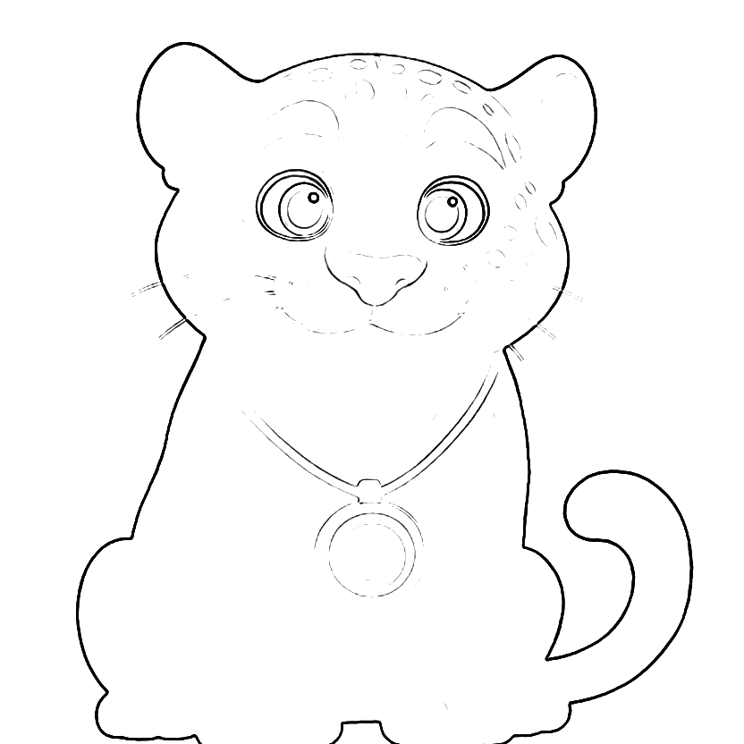

Miedos de la noche · Semana 1 de 4 · Para el adulto
Unos 15 minutos por noche. Para ti, una sola cosa nueva.
Tu parte esta semana
Sé que da miedo. Confío en que puedes con esto.
Cuando tenga miedo, díselo una vez, con calma, y quédate cerca. La primera mitad le dice que su miedo es real; la segunda, que confías en su capacidad.
«No pasa nada». «No es para tanto». Con buena intención, le enseñan que lo que siente está mal, y aprende a esconderlo.
Si duerme contigo o evita algo, sigue igual esta semana. Eso se trabaja en la semana 3, paso a paso.
De día o con la luz tenue, tu hija o hijo maneja la linterna y hacen sombras de animales en la pared. Que decida cuándo prender y apagar. Es acercarse a la oscuridad jugando, y en los estudios, el juego es lo que más ayuda.
Tu hija o hijo marca cuántos dedos de miedo hubo, de 0 a 4 (con 5 años, basta «poquito, medio, mucho»). Tú marcas si usaste la frase y si jugaron. Casi todas las noches es suficiente. Lleven la hoja a la próxima sesión.

Semana 1 · Para colorear y marcar cada noche
¿Cuántos dedos de miedo hay esta noche?
Mi nombre:
| Dedos de miedoEncierra uno | ¿Usé la frase?Adulto | ¿Jugamos?Adulto | ¿Qué ayudó? | |
|---|---|---|---|---|
| Noche 1 | 01234 | |||
| Noche 2 | 01234 | |||
| Noche 3 | 01234 | |||
| Noche 4 | 01234 | |||
| Noche 5 | 01234 | |||
| Noche 6 | 01234 | |||
| Noche 7 | 01234 |
El truco de Yachay: cuando llega el miedo, le pongo un número. Aunque se quede un rato, yo también me puedo quedar.